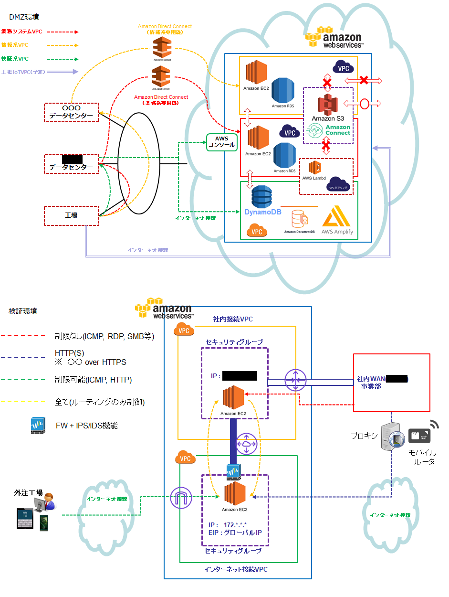

Service
IT課題をワンストップで解決！
Find Future Factory（F3）のホームページをご覧下さり、ありがとうございます。
- 「IT、ITって言うけど、本当のとこ良くわかんないだよね」
- 「お金がかかるんでしょ、ウチには無理々」
- 「何か横文字多くて・・・」
のような印象を多くの方が持たれていると思います。このような方々に、IT関連の仕事を通して得た知識や経験を活かし、お役に立ちたいと思っています。
一人で対応できる量としては大したことは無いかもしれませんが、様々な経験があります。フルスタックエンジニアとして企画・コンサル・設計・開発
全て取り組みますのでご相談下さい。利益よりもやり甲斐、皆さんが満足して頂けることを目指しています。
（何でも出来ます＝何も大したことは出来ない）と思われるかもしれませんが、最も得意な（やりたい）ことはズバリ開発です。インフラ・ネットワークも
可能ですが、あまり興味が持てません。
製造業情報システム部門で３０数年間ITに関わって来ました。ITを専業とする会社やSIerではありませんでしたが、利用者側としての目利きだけでなく、提供する側の
ITエンジニアとしてのスキルも磨いて来ました。当サイト内のWorksを是非ご覧頂き、相談等ございましたら、こちら
からお気軽にご連絡ください！
Works
過去に手掛けた代表的な事例です。(画像はクリックで拡大できます。一部提案ベースのPDFも抜粋しておりますのでご覧ください。)
システム構築の流れもオンプレからAWSへ変わってきているのでAWSの事例を中心にあげていますが、JavaEE、バッチ・スクリプト系も対応可能です。
ここにはあげてありませんが、c++/VB/Delphiと言ったツールでのクラサバ開発の経験も豊富です。
１ オンプレのDMZをAWSに移行
|

|
社外のユーザーとファイルで連携する場合、DMZを介した(S)FTPを利用するケースが多いと思います。また社内システムを社内と社外で共有する
ケースがあります。一般的にオンプレでDMZを構築するとファイヤーウォール、ネットワーク設定等インフラ部門の協力や調整が欠かせません。また、
ある程度の機能を備えたハードウェアも必要になり、運用も含めコストも高額、長納期になりがちです。しかし、AWSのサービスを組み合わせれば、
同等のことが短納期で可能です。
本番稼働させるには、実際のファイヤーウォールのポリシー設定、テスト等も必要になりますが、この環境の構築自体は10時間もかからず出来ました。
|
２ Webとメールを使った応募サイト
|
|
Web上に採用募集ページを公開することまではできていましたが、その後はメールベースでのやり取り、履歴書・応募書類の郵送など書類を介した
マニュアル対応にとどまっていた採用業務をAWSのサーバレス環境で実現しました。主に以下の機能を実装しました。
|
| 1 |
応募者は募集ページからメールアドレスのみでエントリ |
| 2 |
応募者専用ページを自動生成後、ワンタイムURLを送信 |
| 3 |
2の応募ページから身上・歴等必要情報を入力し送信 |
| 4 |
3の送信されたHTMLページをPDF変換し、社内の採用システムに連携 |
３ 署名付きURLでセキュリティを確保したファイル共有サイト
 PDFはこちら
PDFはこちら
|
ファイル共有というよりHTTPSベースのファイル交換サイトです。1のDMZ上で運用するFTPサイトをWebで実現した形となります。詳細はPDFで
ご覧になっていただけますが、以下の機能を実装しました。
※ ユーザーがWindowsでしたのでPowerShellで提供せざるを得ず、配列処理系がかなり面倒でした。
|
| 1 |
クライアントはブラウザでファイルのダウンロード/アップロード、ファイルに対する簡単なチャット |
| 2 |
クライアントがシステムの場合はバッチ等からjQueryのajax通信、curlコマンドによる直接Web-APIへの連携 |
４ 顔認証
|
PDFはこちら
|
Rekognition顔認識の機能を応用し、キー操作が出来ない場合(製造現場で保護具等を付けた状態等)にログインするための仕組みです。>
サインインした後はスマートグラス・音声等でシステムを操作します。
顔認識ですので認証レベルのクリティカルな業務には適しませんが、セキュリティがある程度許容されるケースでは十分な認証を行うことが出来ました。
認証レベルまで上げるには何らかの2要素認証や、音声・ゼスチュア等を組み合わせる工夫が必要になりますね。
|
| 1 |
サインアップ・アクティベーション |
| 2 |
マイページでの画像登録(PCカメラと画像の1対1比較)、個人情報管理 |
| 3 |
サインイン(PCカメラと画像グループの1対N比較)、ベアラートークンによる認証 |
５ 予算枠の消込サイト
|
|
機能的にはよくある残高を消し込む仕組みです。この例では稟議決裁枠を複数の支払案件で消し込み、決済枠を超えないように管理する機能を実現しました。
こちらでは技術的な面について補足します。
|
| 1 |
サーバープラットフォーム
Linux, Java(OpenJDK), WildFly, MySQL, その他(Spring, iText・・・) |
| 2 |
クライアント
ブラウザ, JavaScript, その他(ext.js, DWR・・・) |
| 3 |
開発環境
eclipse
|
|
当時はjQueryの機能が今一つでしたのでext.jsを利用したのですが、その後ライセンスや方向性等少し(？)の部分が目立つようになり、以後jQueryです。ライブラリ選択は
注意が必要ですね。SPAを作りたかったのでDWR(Direct Web Remoting)を採用しましたが、JavaにこだわらずJavaScript(node)で十分だったかもしれません。
|
６ ファイル変換スクリプト
|
|
様々な条件でテキストファイルの編集が必要なケースがあります。汎用的に作っても、条件が多くなるとプログラム自体が複雑になり、
個別に作った方がメンテナンスも楽になる場合が多いです。相当なボリュームのファイルでない限り、コンパイル不要なスクリプト系の方が
便利な事も多いです。
RDBインポート→SQL処理→テキストファイルエクスポートのパターンもあると思いますが、メインフレーム（コボルが多いです）から出力された固定長ファイルの場合、
ヘッダー/フッターや複雑なレコード区分等があるためファイル処理の方が良い場合もあります。JSONのような構造化テキストでは、便利なライブラリが多いのでファイル
処理の方が便利と思います。
|
About
会社概要
| 社名 | Find Future Factory（ファインド・フューチャー・ファクトリー） |
|---|
|
| 事業主名 | 福岡達也（フクオカ タツヤ） |
|---|
| 事業形態 | フリーランス、個人事業主 (SOHO) |
|---|
| 電話 | 06-6481-0570 |
|---|
| 所在地 | 兵庫県尼崎市 ※自宅のため、詳細はお問い合わせの際にお知らせいたします。 |
|---|
Eメール | f3infini@gmail.com |
| ホームページ | https:// |
| 事業内容 |
システムコンサルティング
AWSを利用したサーバレスWEBアプリケーション開発
JavaEEアプリケーション開発 |
| 会社設立 | 2021年1月1日 |
|---|
What's New
- 2022/01/01
- 開業
- 2022/01/07
- ブログを更新しました。